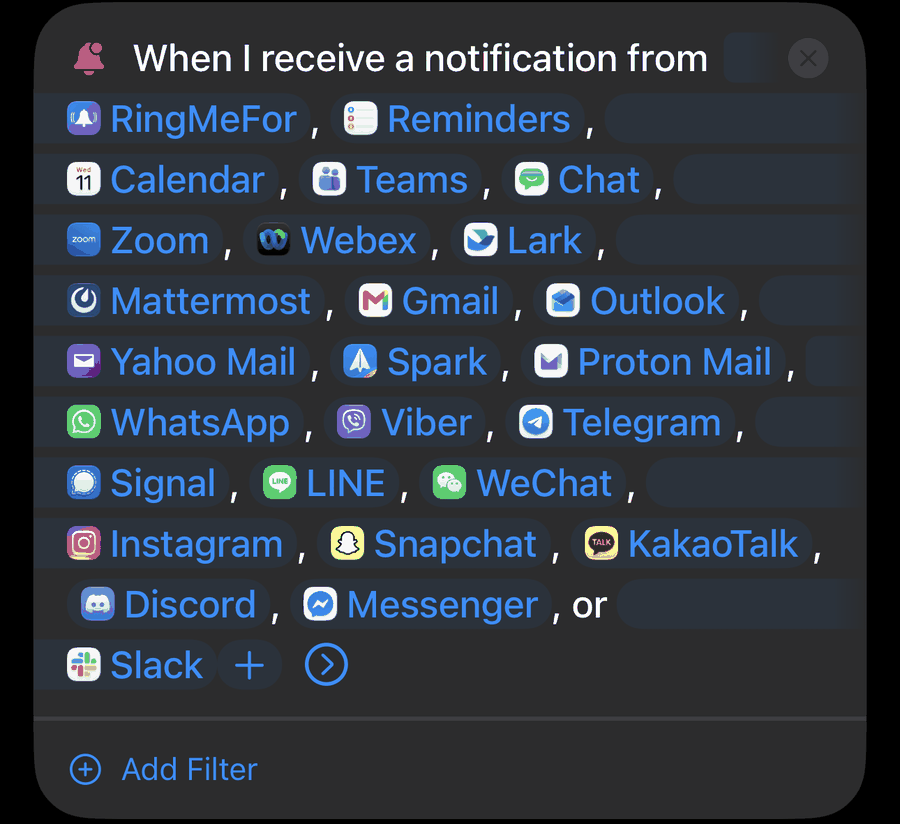
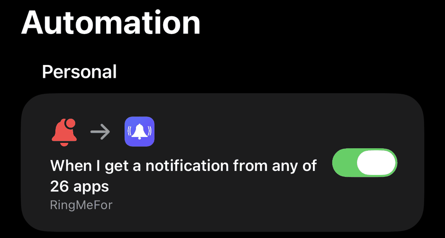

Help me.
It didn't ring
Start in the app: tap the app on RingMeFor's Home screen, then Why Didn't It Ring?. It checks everything RingMeFor can see, and lists what to look at. The usual causes:
The app isn't in the RingMeFor shortcut.
- In Shortcuts, tap RingMeFor in All Shortcuts, then Edit.
- Look at the apps after “When I receive a notification from”.
- If yours isn't there, tap + after the apps and pick it.
The automation is switched off.
- In Shortcuts, tap RingMeFor in All Shortcuts, then Edit.
- Tap the arrow at the end of the apps after “When I receive a notification from”.
- Turn Automation on, and leave Notify off.
Allow Running When Locked is off, so nothing rings while your iPhone is locked.
- In Shortcuts, open the RingMeFor shortcut and tap Edit.
- Tap ⓘ at the bottom, then Privacy, and turn on Allow Running When Locked.
RingMeFor is hidden or requires Face ID.
- Alarms from an app that's hidden or requires Face ID never ring.
- Touch and hold the RingMeFor icon: if the menu says Don't Require Face ID, tap it.
A Focus, such as Sleep, or Scheduled Summary may be holding back the app's notifications.
- Allow the app in each Focus you use: Settings → Focus.
- Keep it out of Settings → Notifications → Scheduled Summary.
The app didn't send a notification.
- Check Settings → Notifications and the app's own settings: some apps only notify for mentions.
RingMeFor is off, the app is off or paused, or the app shows Needs Pro to ring.
- Tap On at the top of RingMeFor's Home screen, and turn on the app's switch.
- If the app's page says Paused until…, tap Resume. A paused rule says “paused until …” under its name: touch and hold it, then tap Resume.
- If the app shows Needs Pro to ring: free RingMeFor rings for one app (see RingMeFor Pro).
No rule matched, or the rule was outside its hours, in its quiet time or waiting for the message to come again.
- On the app's page, tap Why Didn't It Ring? and type the message under Check a message: it says whether it would ring, and which rule.
- History says why each notification did or didn't ring; to see the ones no rule matched, tap •••, then Show Every Notification.
An alarm for that app was still ringing or counting down.
- A new notification from the same app doesn't add a second alarm while one is ringing or counting down. A group's rule rings one alarm at a time too, across the group's apps.
The notification reached RingMeFor late.
- If Settings → Skip if late by is set, a notification that reaches RingMeFor later than that after it was sent doesn't ring, and History says “Skipped: sent … before it reached RingMeFor”. Choose a longer time, or Never skip. Time Sensitive notifications are never skipped for being late.
iOS didn't run the shortcut.
- If History has nothing near that time, this is the likely cause: iOS sometimes doesn't run it, especially when several notifications arrive within seconds.
Alarms aren't allowed for RingMeFor.
- The Home screen says so; tap the button there to fix it.
Your iPhone restarted and hasn't been unlocked since.
- Unlock it once.
Your alarm volume is low.
- Open Settings → Sounds & Haptics and check the Ringtone slider.
- Under Alarms and Timers, check Match Ringtone Volume and its slider.
Then run Settings → Test with the Phone Locked to check the whole chain. To hear an alarm without the shortcut, tap the app, then Ring a Test Alarm; it rings in a few seconds.
Set up
- Open RingMeFor and follow the setup: it explains the alarms, iOS asks whether RingMeFor may set alarms, and you pick the apps that should ring.
- Tap Connect next to an app, then Add the RingMeFor shortcut, then Add Shortcut. One shortcut covers all your apps, and it can already run while your iPhone is locked. The Connect screen tells you which of your apps to add to it.
- Shortcuts then shows All Shortcuts. Tap RingMeFor, then Edit at the top right. Tap + at the end of the apps after “When I receive a notification from” and pick one of your apps; tap + again for each of the others. Only apps on your iPhone can be picked.

- Don't skip this one. Tap the arrow at the end of the apps to show the automation's switches. Turn Automation on, and leave Notify off. Shared shortcuts always arrive switched off, and RingMeFor hears nothing until you turn it on.

- Back in RingMeFor, open Settings → Test with the Phone Locked and tap Start the Test. If iOS asks whether RingMeFor may send notifications, allow it: the test uses a notification from RingMeFor itself. Then lock your iPhone. The first time, go to the Home Screen instead, so you can answer if Shortcuts asks whether RingMeFor can run: tap Always Allow, then run the test again with your iPhone locked. A test alarm rings within about 20 seconds; if it doesn't, the screen lists what to check.
- Wait for a notification from your app, or ask someone to message you there. When RingMeFor hears from it, the app's row on the Home screen says Connected. A message rings only if it matches the app's rule: see what a ready-made app rings for.
There's no need to run the shortcut yourself with ▶. It runs by itself when a notification arrives. Keep its name, RingMeFor: RingMeFor's buttons open it by that name.
Remove apps you don't use from the RingMeFor shortcut (open it and tap the apps after “When I receive a notification from”). Every notification from a listed app runs the shortcut, and iOS can skip one that arrives while another is being checked.
Adding an app later
On RingMeFor's Home screen, tap Add Apps and pick the app from the 77 ready-made ones, or type its name under Another app, then tap Add. RingMeFor only hears apps listed in the RingMeFor shortcut, so it goes straight on to adding them there: tap Open the RingMeFor shortcut, then Edit, tap + after the apps, and pick each new app. Each one turns green as soon as one of its notifications comes through. If you tap Done before that, the app shows Not connected yet; tap it, then Connect, for the same steps.
Free RingMeFor rings for one app, with one rule. You can still add as many apps as you like: the others show Needs Pro to ring, and you can choose which app is the one that rings (see RingMeFor Pro).
Good to know
- RingMeFor needs iOS 27 or later. iOS doesn't let apps read other apps' notifications, so a Shortcuts automation, the RingMeFor shortcut, passes them to RingMeFor. You set it up once.
- Like any automation, it depends on iOS delivering the notification and running the shortcut, and iOS can skip a run, especially when several notifications arrive within seconds. Use RingMeFor as a backup for the messages you care about, not as an emergency, medical or safety alarm. If an app offers Critical Alerts, keep them on.
- After your iPhone restarts, nothing rings until you unlock it once.
- Alarms from a RingMeFor that's hidden or requires Face ID never ring.
Rules
Each app has its own rules: tap the app on the Home screen, then a rule, or Add a Rule. An app rings when any of its rules that's on matches a notification. A rule has these parts, top to bottom:
- Ring for: Every notification, or Only certain words or people. Words match anywhere in the notification; capital letters, accents, plurals and hyphens don't matter, so “outage” also matches “Outages” and “sev1” matches “SEV-1”. A person matches when the message is from them, not when it only mentions them.
- Advanced matching: Match whole words only is on unless you turn it off, so “urgent” doesn't match “nonurgent”. Patterns are regular expressions, for text that changes: “order #\d+” matches any order number.
- Never ring if it mentions: words that keep the rule quiet, like “resolved” or “test”.
- Repeats: Only when it comes again rings only when the rule matches 2 to 10 times within the time you choose, like iOS's Repeated Calls. With From the same person, each person counts separately.
- When (RingMeFor Pro): Only at certain times and days, such as weeknights from 22:00 to 07:00. Times follow your iPhone's clock and time zone.
- Alarm: the sound and Loudness (RingMeFor Pro), then three choices in every version. Vibrate first makes the alarm vibrate without a sound, then ring with its sound a minute later. Count down first waits 5, 10, 15 or 30 seconds, with a countdown and Cancel on the Lock Screen and in the Dynamic Island, so you can stop it before it rings. Second button is Snooze, or a button that stops the alarm and opens the app the message came from (or RingMeFor, for apps it can't open).
- After it rings: Quiet time keeps the rule from ringing again for 1, 5, 15 or 30 minutes. Ring again (RingMeFor Pro) rings up to 3 more times, every 1, 2 or 5 minutes, until you stop it.
To check a rule, open the app's Why Didn't It Ring? and type a message under Check a message: nothing is sent or saved. To pause one rule, touch and hold it in the app's list of rules and pick how long, or Pause until a Time… to pick the date and time. Share Rule, at the bottom of an app's saved rule, makes a link to it: the link carries its words, people and settings, not your sounds or groups, and opens in RingMeFor, or on this website for someone who doesn't have it yet.
Sounds (RingMeFor Pro): 14 alarm sounds, Vibrate only, and sounds of your own: tap Add a Sound from Files in a rule. RingMeFor keeps the first 30 seconds, made as loud as it can be without distorting. Settings → Your Sounds plays, renames and deletes them. Loudness (Loud, Louder or Loudest, for every sound but Standard alarm) makes the sound itself louder; the alarm still rings at the Alarms and Timers volume in Settings → Sounds & Haptics. The free version rings with Hi-Lo.
Calendar: on Calendar's page, Use Event Details adds the event's location, notes and invitees to its alerts, read from Calendar when an alert arrives, so a rule can ring for meetings with certain people. It asks for full access to your calendars.
Groups
With RingMeFor Pro, a group puts apps together under a name and a colour, with rules that check every app in it: one “My manager” rule for Slack, Teams and Outlook, say. On the Home screen, tap New Group (it shows once you have two apps), name it, then pick its apps and add its rules. To put an app in a group from its own page, tap Add to a Group. An app is in one group at most; picking it for another group moves it.
- Each app keeps its own rules. A notification from an app in a group is checked against the app's rules and the group's, and any of them can ring. Nothing in the group stops one of the app's own rules, or the other way round.
- One alarm, from the rule that rings hardest. When several rules match one notification, one alarm rings, with the settings of the strongest: Ring again counts most, then a sound or loudness of its own, then words or people over every notification. On a tie, the app's own rule wins.
- A group rule counts across the group. Its quiet time and “only when it comes again” count matches from all the group's apps, and it rings one alarm at a time: the same outage posted in Slack and in Teams rings once.
- The colour shows on the Home screen, in History and on the group's alarms on the Lock Screen and in the Dynamic Island. Tap the group's name on the Home screen to change its name, colour, apps or rules.
- History names the group rule that rang, such as “Slack · Work: Outages”.
- Deleting a group deletes its rules and cancels their alarms; its apps stay, with their own rules. Taking an app out of a group keeps its own rules too. Without Pro, group rules don't ring, and each app's own rules work as usual.
Stopping an alarm
Slide Stop on the alarm screen, or tap Stop if the alarm shows at the top of your unlocked iPhone. Pressing the side button or a volume button silences the alarm too.
Snooze silences the alarm, and it rings again after the time in Settings → Snooze for (1 to 15 minutes). A countdown shows on the Lock Screen and in the Dynamic Island meanwhile, with Cancel Snooze if you don't need it. Ring again is different: it's for when you don't answer at all. If you don't tap Stop or Snooze, the alarm rings again, up to 3 more times.
If the rule has Vibrate first on, Snooze stops only the vibration, and the alarm still rings with its sound a minute later; Stop ends both. If its Second button opens the app, that button stops the alarm and opens the app the message came from, in place of Snooze. While an alarm counts down first, Cancel on the Lock Screen or in the Dynamic Island stops it before it rings.
If you put the alarm screen away, open RingMeFor (or tap the alarm in the Dynamic Island): a ringing or snoozed alarm shows at the top of every screen, with Stop and Snooze.
Ring again (RingMeFor Pro): if the rule has Ring again on, the alarm rings up to 3 more times, titled “Still: …”, until you stop it. Stop or Snooze ends the repeats, and History then shows, for example, “Stopped 12:03, repeats cancelled”. Turning RingMeFor off, turning the app off, removing it or deleting the rule also cancels repeats already set.
Pressing the side or volume button, swiping the alarm away on an unlocked iPhone, or stopping it on Apple Watch may not end the repeats. If a “Still:” alarm rings after you silenced one, slide Stop on it.
Turning it on and off
At the top of the Home screen, tap On, For… (1, 2, 4 or 8 hours) or Off. While it's on for a set time, a Live Activity on the Lock Screen shows how long is left, with a Turn Off button.
You can also ask Siri: “Turn on RingMeFor” (for the time in Settings), “Turn on RingMeFor for 2 hours”, “Keep RingMeFor on”, “Turn off RingMeFor” or “Is RingMeFor on?”.
To add the Control Center controls, open Control Center, tap +, then Add a Control, and pick RingMeFor. There are two buttons: Turn On RingMeFor (for the time in Settings) and Turn Off RingMeFor, which also cancels alarms already set. They're buttons rather than a switch, so they don't light up to show whether RingMeFor is on; the Home screen does.
To skip one app, turn off its switch on the Home screen. To skip it for a while, tap it, then Pause: for 15 or 30 minutes, for 1, 2 or 4 hours, until 8 AM, or Until a Time… you pick, up to 30 days ahead. It comes back by itself, and Resume ends the pause sooner. Pausing an app or turning it off, like turning RingMeFor off, also cancels alarms and repeats that are already set.
History
History lists the alarms RingMeFor rang and the matches it skipped, each with why: the rule and the word or person that matched, or the reason it stayed quiet, such as quiet time or the rule's hours. The line at the top counts this week's alarms and notifications. Once History has notifications from two apps or more, a row of those apps below it shows one app's entries at a time; All apps shows them all again.
To see every notification from your apps, including the ones no rule matched, tap •••, then Show Every Notification. Touch and hold a notification, then tap Make a Rule from This, to start a rule for messages from that sender. History keeps the latest 300 entries, alarms longest, or 1,000 with RingMeFor Pro, and up to 140 characters of each message. It stays on the iPhone it was made on and isn't synced. •••, then Clear History, empties it.
Your data
These are in Settings → Your Data:
- Sync with iCloud keeps your apps, groups, rules and alarm settings the same on the iPhones signed in to your Apple Account, through your own iCloud. It's on unless you turn it off. History, and whether each iPhone is connected, stay on each iPhone, so connect the shortcut on each one. A new iPhone takes iCloud's copy first; after that, changes on either iPhone reach the other.
- Export Apps and Rules makes a file with your apps, groups, rules, settings and added sounds, but not History, to keep in Files or open on another iPhone.
- Import Apps and Rules opens such a file. It replaces your apps, groups, rules and settings with the file's, after you confirm; your History stays.
- Erase All Data deletes your apps, groups, rules, History, settings and added sounds from this iPhone and from iCloud, and cancels alarms already set. iCloud sync turns off on this iPhone, so your other iPhones keep theirs; erase there too to remove everything. RingMeFor Pro stays unlocked.
Settings → About → Copy Diagnostics copies the same status that Email Support fills in, such as the versions, the connection, sync and this week's counts, to paste into an email or a message. Nothing from your notifications is in it.
RingMeFor Pro
A one-time purchase, with no subscription. It adds:
- Every app, with unlimited rules for each
- Times and days for a rule
- Ring again, until you stop it
- 14 alarm sounds and Vibrate only, sounds of your own, and Loudness
- Groups, with rules for all their apps and a colour
- 1,000 entries in History, instead of 300
- The Ring Alarm action, for shortcuts of your own
Free RingMeFor rings for one app, with one rule, with no time limit. That rule can use words, people, patterns, exclusions, “only when it comes again”, quiet time, vibrate first, count down first and the second button. Your other apps show Needs Pro to ring, and their rules are kept. To make a different app the one that rings, open it in RingMeFor and switch to it; RingMeFor asks you to confirm.
On a new iPhone, or after reinstalling, Pro usually comes back by itself. If it doesn't, tap Settings → Restore Purchases, signed in with the Apple Account you bought it with. Pro isn't shared through Family Sharing.
Apple handles payments and refunds: to ask for a refund, go to reportaproblem.apple.com. After a refund, RingMeFor goes back to the free version once your iPhone hears about it from the App Store, and keeps your apps and rules.
Questions
Before you start
I'm on iOS 26.
RingMeFor needs iOS 27 or later, because the Shortcuts automation it relies on, “When I receive a notification from…”, came with iOS 27. To update, open Settings → General → Software Update.
Do I need to keep RingMeFor open?
No. When a notification arrives from one of the RingMeFor shortcut's apps, iOS runs the shortcut, which starts RingMeFor for a moment to check it.
Can I use it on an iPad, or on more than one iPhone?
RingMeFor is made for iPhone. It may install on an iPad, but it isn't made or tested for one. On a second iPhone, Sync with iCloud (Settings → Your Data) brings your apps, groups, rules and alarm settings over and keeps them the same on both. Each iPhone still needs the RingMeFor shortcut and its automation: if you use iCloud for Shortcuts, the shortcut may already be there with its automation switched off, so turn it on (open the shortcut, tap Edit, then the arrow after its apps) and check Allow Running When Locked. History stays on each iPhone. Pro works on every iPhone signed in with the Apple Account you bought it with.
Can it ring for calls, texts or iMessages?
For calls and messages from people who matter, iOS has Emergency Bypass, which lets them sound even in Silent mode or a Focus: in Contacts, open the person, tap Edit, then Ringtone or Text Tone, and turn on Emergency Bypass. Messages and Phone are also among RingMeFor's ready-made apps: add them in RingMeFor and to the RingMeFor shortcut like any other app. Phone's first rule rings when the same caller calls twice within 5 minutes. With RingMeFor Pro, you can also add RingMeFor's Ring Alarm action to a Shortcuts automation of your own.
Does it need an internet connection? What about abroad or with a VPN?
RingMeFor itself doesn't use the internet, so roaming or a VPN doesn't change what it does. The apps you watch need a connection to get their notifications, and buying or restoring Pro needs the App Store. Rules with times follow your iPhone's clock, so they move with your time zone.
Is RingMeFor in my language?
Its screens are in English. Your rules work in any language: capital letters and accents don't matter, and words in Chinese, Japanese and Thai match inside sentences.
Accessibility
RingMeFor's alarms are iOS alarms, with Stop and Snooze, and they also show on a paired Apple Watch. Its screens follow Dark Mode and your text size; at the largest sizes, rows stack so nothing is cut short. If something in RingMeFor is hard to use with VoiceOver, larger text or another accessibility setting, please email me: it helps me fix it.
How it behaves
Does it use much battery?
It's made to use little. RingMeFor doesn't run in the background on its own and uses no network. iOS starts it for a moment for each notification from the apps in the RingMeFor shortcut, including apps you haven't added in RingMeFor, so remove apps you don't use from the shortcut. Settings → Battery shows how much it uses on your iPhone.
Does it work in Low Power Mode?
It should: Low Power Mode doesn't turn off notifications or alarms, though some apps check for new messages less often in it, and RingMeFor can only ring once the notification arrives. It hasn't been tested on every iPhone, so turn on Low Power Mode and run Settings → Test with the Phone Locked to check yours.
Does it ring during Sleep or another Focus?
The alarm itself rings through Silent mode and any Focus. It isn't confirmed yet whether iOS runs the RingMeFor shortcut for a notification that your Focus silences. To be safe, allow the apps you rely on in each Focus you use, such as Sleep (Settings → Focus), and keep them out of Settings → Notifications → Scheduled Summary. That also lets their other notifications through in that Focus. For the nightly check, allow RingMeFor too.
My iPhone restarted. Do I need to do anything?
Unlock it once. After a restart, iOS keeps RingMeFor's data locked until you first unlock your iPhone, so nothing rings until then. For the first few minutes after that, while iOS finishes starting up, it may pass notifications to RingMeFor late, so the first alarm can come a few minutes after the message. iPhones restart for automatic iOS updates, when the battery runs out, and after about 72 hours without being unlocked. If you rely on RingMeFor overnight, turn off automatic iOS updates (Settings → General → Software Update → Automatic Updates), or unlock your iPhone after an update.
It rang long after the message arrived.
A notification can reach RingMeFor late: an app may deliver it only when your iPhone is back online, and for a few minutes after a restart iOS may pass notifications on late. If a late alarm is no use to you, set Settings → Skip if late by to 5, 10 or 30 minutes: a notification that reaches RingMeFor later than that after it was sent stays quiet, and History says how late it was. Time Sensitive notifications are never skipped for being late.
It stopped working after an iOS update.
Unlock your iPhone once, then run Settings → Test with the Phone Locked. If no alarm rings, the screen lists what to check: your apps in the shortcut, the automation switch (open the shortcut, tap Edit, then the arrow after its apps) and Allow Running When Locked. If it still doesn't work, add the shortcut again: tap your app on RingMeFor's Home screen, then Set Up the Connection Again, I don't have the RingMeFor shortcut and Add the RingMeFor shortcut, and add your apps to it if they aren't listed. Then delete the old copy in Shortcuts. To hear about it sooner next time, turn on the nightly check on the same test screen.
Does the alarm show my messages on the Lock Screen?
Not unless you turn that on. For chat and email apps, the alarm shows the app and who the message is from, such as “Discord · Alice”. For reminders, calendar, alerts, trading, payments and cameras, it shows the app and the rule's name, such as “Reminders · Due reminders”. Turn on Settings → Show the message to add the first line: “Discord · Alice: Are you up?”. Alarms show on the Lock Screen, in StandBy and on a paired Apple Watch even if you hide notification previews, so leave Show the message off if others can see your iPhone.
Does it work with Apple Watch or CarPlay?
If your iPhone is paired with an Apple Watch, the alarm also shows on the watch, with Stop and Snooze. It isn't confirmed yet whether Stop on the watch also ends Ring again's repeats; if a “Still:” alarm rings afterwards, stop it on your iPhone. RingMeFor has no CarPlay app of its own, and how its alarms show in CarPlay hasn't been tested.
Why does RingMeFor send me a notification every night?
That's the nightly check, if you turned it on. At 9:00 PM, or the time you chose, RingMeFor sends itself a notification without a sound, and the RingMeFor shortcut passes it back. If it doesn't come back within 5 minutes, you get a warning, so you find out before you rely on it. To stop it, turn the nightly check off on the Test with the Phone Locked screen. Don't turn off RingMeFor's notifications instead: the check needs them to warn you.
How do I pause it, for example for the weekend?
Tap Off on the Home screen, or say “Turn off RingMeFor”, and turn it back on when you're ready. To pause one app, tap it, then Pause, for a few minutes or hours, until 8 AM, or until a date and time you pick, or turn off its switch on the Home screen. To pause one rule, touch and hold it. With RingMeFor Pro, a rule can ring only at certain times and on certain days, such as weekdays.
Siri says it can't find RingMeFor.
Say the name as three words, “Ring Me For”: for example, “Turn on Ring Me For”. If Siri still doesn't find it, open RingMeFor once, then try again. The buttons on RingMeFor's Home screen always work.
Rules and alarms
What does a ready-made app ring for?
Each ready-made app comes with a first rule, and most ring only for certain words, so an everyday “hi” doesn't ring. For example, Discord rings for “urgent”, “emergency”, “@everyone”, “@here” and “wake up”; most email apps for “urgent”, “asap” and “emergency”; camera apps for people, the doorbell and smoke, but not motion; and payment apps for money you receive, such as “paid you”. Messages rings for “urgent”, “emergency” and “call me”, and Phone when the same caller calls twice within 5 minutes. Reminders and Calendar ring for every reminder and event. To change what rings, tap the app, then its rule. Why Didn't It Ring? on the app's page checks a message you type.
Two messages arrived, but only one alarm rang.
While an alarm for an app is ringing or counting down, more notifications from that app don't add a second alarm; once you stop it, the next one rings. A group's rule also rings one alarm at a time across the group's apps, so the same message in two of them rings once. A rule's Quiet time holds it back for a while after it rings, and Only when it comes again waits for more matches. And iOS sometimes doesn't run the shortcut, especially when several notifications arrive within seconds. History shows which notifications reached RingMeFor and what it did with each (tap •••, then Show Every Notification).
It rang for the wrong message.
History shows which rule rang and the word or person that matched. Open that rule and add a word under Never ring if it mentions, check that Match whole words only is on under Advanced matching, or switch Ring for from Every notification to Only certain words or people. If a group's rule rang, History names the group: open it from the Home screen. Why Didn't It Ring? on the app's page checks a message you type.
Why do I get so many alarms?
Every matching notification rings, so a rule set to Every notification rings for every message from that app. Open the rule and choose Only certain words or people, set Quiet time under After it rings, or turn on Only when it comes again under Repeats. For a break, tap Off on the Home screen, or pause the app.
A person rule didn't ring.
A person counts when their name is the notification's sender or title, or starts a line of the message, like “Alice: are you up?” in a group chat. A message that only mentions the name doesn't count. Capital letters and accents don't matter. Why Didn't It Ring? on the app's page checks a message you type, with the person's name under From.
The shortcut
What does Allow Running When Locked do?
It lets the RingMeFor shortcut run while your iPhone is locked, which is when you need the alarm most. Without it, nothing rings while your iPhone is locked. It applies only to this shortcut, which does one thing: pass each notification to RingMeFor. The shared shortcut comes with it on. To check: in Shortcuts, open the RingMeFor shortcut, tap Edit, then ⓘ at the bottom, then Privacy.
I added the shortcut twice.
Keep one: with two copies, each notification reaches RingMeFor twice, and Home shows a note about it. This can happen when you add the link again after reinstalling RingMeFor, even if Shortcuts offers to replace the old one. In Shortcuts, touch and hold the RingMeFor shortcut you don't need in All Shortcuts, tap Delete, and make sure the one you keep is named RingMeFor, lists your apps and has its automation on. After reinstalling RingMeFor, you don't need to add the shortcut again: the one you have keeps working.
Nothing happens when I tap Add the RingMeFor shortcut or Open the RingMeFor shortcut.
Both open Apple's Shortcuts app, so check that it's installed; if you deleted it, get Shortcuts again from the App Store. Open the RingMeFor shortcut finds the shortcut by its name: if you renamed it, open Shortcuts, tap Library and open it from there, or rename it back to RingMeFor.
I got a new iPhone, restored a backup or reinstalled RingMeFor.
If you restored a backup, your apps, rules and History come back. Otherwise, with Sync with iCloud on, your apps, groups, rules and settings come back from iCloud, and Import Apps and Rules opens a file you exported; History starts again. Pro comes back with your Apple Account; if it doesn't, tap Settings → Restore Purchases. On a new or restored iPhone, the RingMeFor automation may arrive switched off. Open the RingMeFor shortcut, tap Edit, then the arrow after its apps, and turn Automation on; check Allow Running When Locked (open the shortcut, tap ⓘ, then Privacy), then run Settings → Test with the Phone Locked. If you add the shortcut again, delete the old copy, or each notification is checked twice.
History
An app I didn't add appeared in RingMeFor.
The RingMeFor shortcut passed a notification from an app RingMeFor doesn't know, so RingMeFor added it by name, with no rules. It doesn't ring, and none of its messages are kept until you add a rule to it or turn it on. This happens when you add an app to the shortcut yourself, or when iOS reports an app under another name, such as another app from the same company or the app's name in your iPhone's language. If you don't want it, open it and tap the Remove button at the bottom of its page: RingMeFor won't add it again.
History shows “Unknown app”.
The shortcut passed a notification without saying which app it came from, or with something that looks like a message instead of an app's name. History shows the first 40 characters of what arrived as the app's name, so you can fix the shortcut; the message isn't kept. In a shortcut you made yourself, set the Check Notification action's App to the notification's App; the ready-made RingMeFor shortcut already does this.
History shows a notification I never got.
RingMeFor can't tell where a notification really came from: any shortcut in your Shortcuts library can pass it any text as if it were a notification. Check Shortcuts → Library for shortcuts you don't recognize, and only add shortcuts you trust.
Pro and privacy
Does RingMeFor read my messages?
It sees only the notifications the RingMeFor shortcut passes it, from the apps listed in the shortcut, and only on your iPhone. It checks the ones from apps you added in RingMeFor against your rules, and History keeps up to 140 characters of each. Notifications from ready-made apps you haven't added are ignored and not kept, and an app RingMeFor added by itself keeps none of its messages until you give it a rule or turn it on. To keep an app's notifications from reaching RingMeFor at all, remove it from the shortcut's apps. Sync with iCloud carries your apps, rules and settings, never notifications or History, and only through your own iCloud. Nothing is sent to the developer or anyone else: see the privacy policy.
Why does the free version ring for only one app?
One app with one rule, with no time limit, is enough to check that the whole chain rings on your iPhone before you pay. RingMeFor Pro, a one-time purchase, rings for all your apps and adds unlimited rules, times and days, Ring again, sounds and Loudness, groups, a longer History and the Ring Alarm action (see RingMeFor Pro). Either way you can add as many apps as you like; in the free version the others show Needs Pro to ring.
Removing RingMeFor
Delete the RingMeFor shortcut too, or its automation keeps running for every notification from its apps, with nothing to pass them to: in Shortcuts, touch and hold RingMeFor, then tap Delete. Deleting RingMeFor deletes your apps, rules and History from your iPhone; your own backups may keep a copy until they're replaced, and iCloud keeps the last synced copy of your apps and rules. To delete that too, tap Settings → Erase All Data before you delete RingMeFor. To clear only History, tap History, then •••, then Clear History.
Contact
RingMeFor is made by Lance Mikaelo Enriquez (Philippines). For help, problems or ideas, use Settings → About → Email Support in RingMeFor: it opens your mail app with the versions and RingMeFor's status filled in, nothing from your notifications, and you can edit it before sending. Or email lancemikaelo.enriquez@gmail.com.
If something isn't working, say which app it's about and what happened. If you write from somewhere else, please include your iPhone model, iOS version and RingMeFor version (Settings → About). A screenshot of Why Didn't It Ring? or History helps too; hide anything private in it first.
RingMeFor keeps everything on your iPhone; read the privacy policy.
Last updated November 12, 2026 for RingMeFor 1.0.1